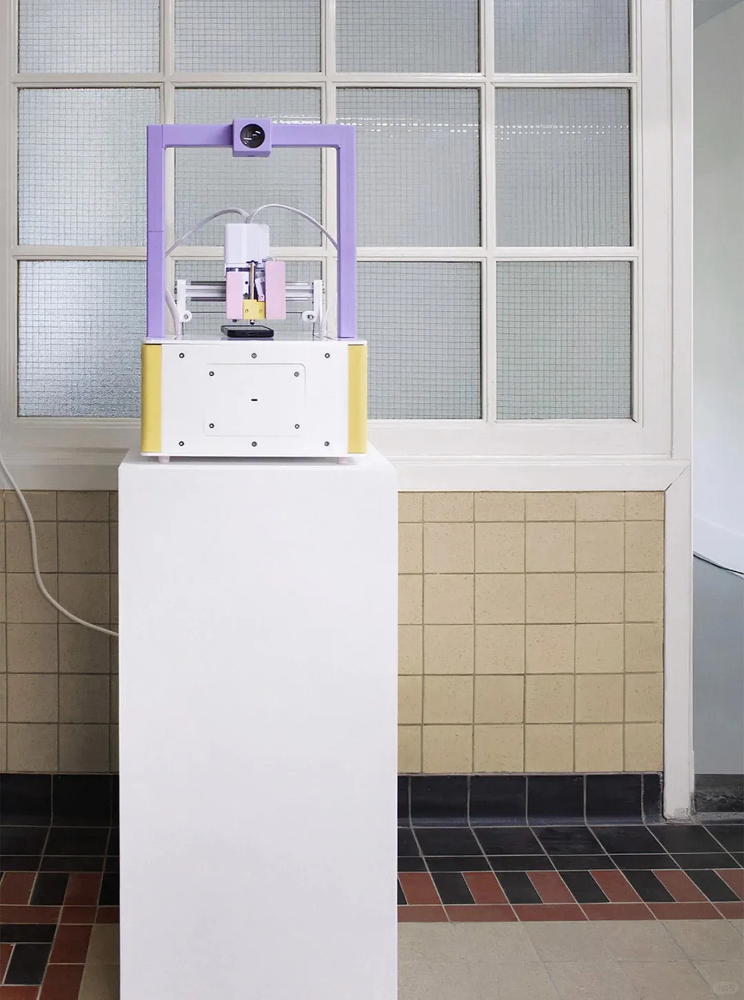
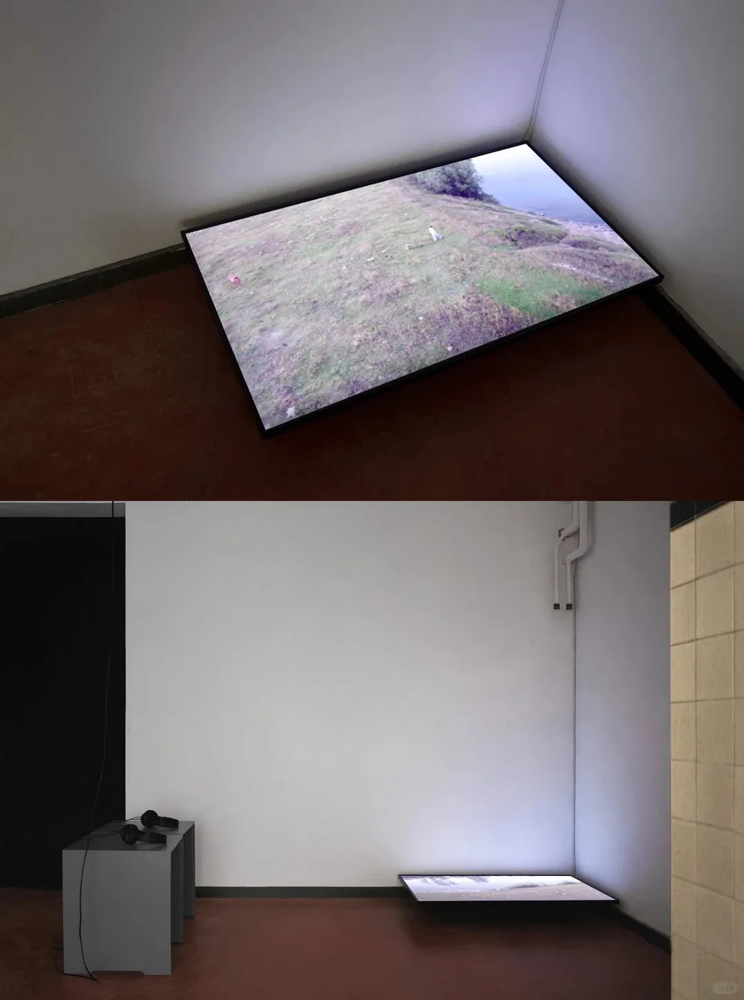
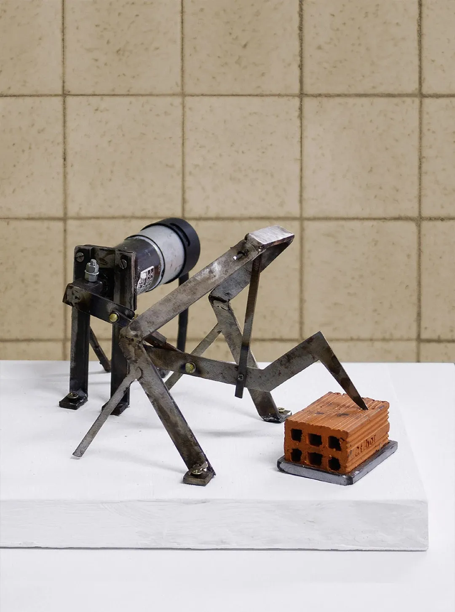
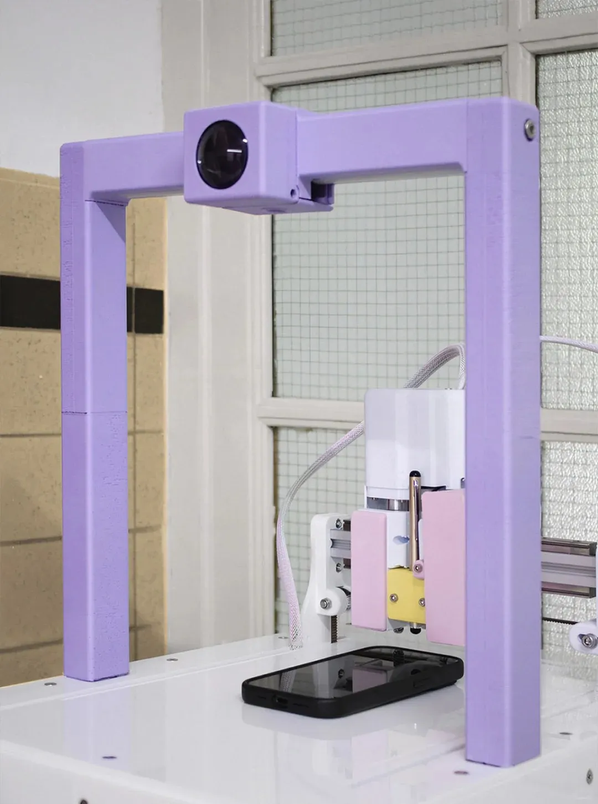
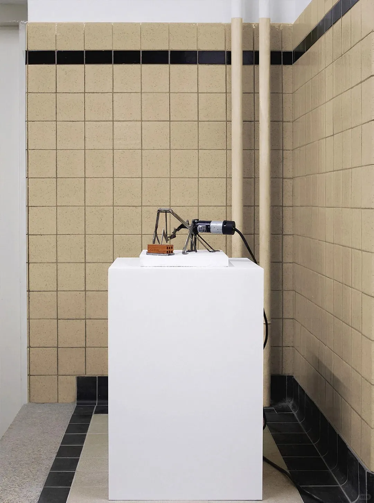

🪨Sisyphus pushing the boulder up a hill is a Greek myth; Sisyphus logging hours on timesheets and drafting grant evaluations is contemporary reality. The latter isn't a hypothetical dystopia. It is what is already happening inside the art world.
I recently viewed the online documentation of ESC 2035 (II): We kept going., an exhibition at at SUNSET in Scheveningen, The Hague, on view from 10 to 25 April 2026. The venue is a former girls' school, now run as a project space. The building is already complicit in the show's theme: the rooms still hold their old sequence, a corridor that runs one way, doors at fixed intervals, a timetable you can feel without being told what it was.

Curated by the nomadic art platform 0—1, this exhibition is the second chapter of the ESC 2035 trilogy. The first was '… the world paused.' at Quartair; the third, '… we never changed.', ran at …ISM Project Space from 29 May to 9 June 2026. In this second chapter, repetition is the condition: actions loop, structures calcify, and movement continues without arriving anywhere new.
Yet perhaps this second chapter is where most people in the art world actually live.
Among the seven artists, Andrei Nacu's video Except in the context of time… (2017, 4 min) captures the symptom most clearly. Armed with a single bucket, Nacu scoops water from the Prut, the river that forms part of the border between Romania and Moldova, and carries it from upstream to downstream, attempting to accelerate the river's flow by hand.

The curatorial text calls this a Sisyphean attempt: a solitary figure engaged in an unwinnable chore. The imagery is apt enough that it could be adapted as an intern recruitment poster for almost any major art institution without further copy editing.
The same text describes the wider condition as a system that has lost its exit and settled into repetition, a script that no longer needs anyone to issue commands, a routine that reads as inherited rather than chosen.

Reading these diagnoses is uncomfortable because they don't describe a fictional scenario. They describe the reality art practitioners wake up to each day: unlocking phones, opening shared Google Docs, filling out spreadsheets.
And that is what haunts me.
Many large-scale group exhibitions in recent years attempt to counter the collective impasse with redemption narratives or technological optimism. The honesty of ESC 2035 (II) lies in its refusal to offer an illusory exit. It does not pretend there is a way out, nor does it promise change. Even the open call itself, a shortlist drawn from nearly six hundred proposals and then divided across the trilogy's three chapters, reads as a search for an involutionary frequency in a sea of noise.
In an era where escape itself has been commodified through digital detoxes, mindfulness workshops, and hashtags about leaving the big cities, true artistic escape may no longer mean a physical departure. It is the refusal of illusory progress. Admitting that the system has reached a deadlock can itself become a form of liberation.
🪨西西弗斯推石头是希腊神话，西西弗斯写周报是当代日常。后者不是没有发生，它已经在艺术行业里发生了。
最近云看了海牙 at SUNSET 今年的新展 ESC 2035 (II)：《我们继续前行》，这座由废弃女校改建的空间本身就是一个关于重复的隐喻：教室、走廊、残留的制度秩序，像刻进墙壁里的肌肉记忆，和展览要讲的东西构成了某种奇妙的关联。该展览由游牧艺术小组 0—1 策划，是其 ESC 2035 展览三部曲的第二章。三部曲的第一章是《一个世界悬停的时刻》；第三章则叫 《我们从未改变》。目前的第二章，重复成为了主导性的状况，行动循环，结构固化，运动继续推进却不导向任何新的地方。

但或许这第二章，才是处于艺术行业的大多数人真正活着的地方。
七位艺术家中，Andrei Nacu 的影像作品《Except in the context of time…》（除非置于时间之中）是我觉得最能表现出这种症候的。他提着一只水桶，在罗马尼亚与摩尔多瓦交界的普鲁特河打水，从上游搬运到下游，试图用人力加速河水的自然流速。策展词称之为「西西弗斯式的企图」。一个孤独身影，进行着毫无胜算的苦役。感觉这画面几乎可以拿去给任何一家美术馆做招募实习生的海报，文案都不用改。
策展声明将这种状态描述为「一种永久的频率」。一个丢失了出口、选择重复的系统，一套「不再需要人类指令即可自行延续的脚本」，一种「继承来的肌肉记忆」。这些说法精准得让我有些不舒服，因为它们描述的不是某个虚构的反乌托邦，而是艺术从业者们每天醒来滑开手机、打开工作文档、填表时感受到的麻木现实。

而这正是最让我在意的地方。
近几年的诸多大型群展，习惯于用某种救赎叙事或技术乐观主义来回应困局。而这场展览的诚实在于，它拒绝提供虚假出口。不假装有出路，不承诺改变会到来。在六百多份投稿中筛出七位艺术家的 open call 的过程本身，也像在无数噪音里校准一个「内卷的频率」。
在一个连逃逸都变成商品的时代，数字排毒、正念工作坊、「逃离北上广」的话题标签。我认为真正的艺术逃逸或许不再是物理上的离开，而是对「虚假前进」的拒绝。承认系统已陷入死锁，本身就可以是一种解放。